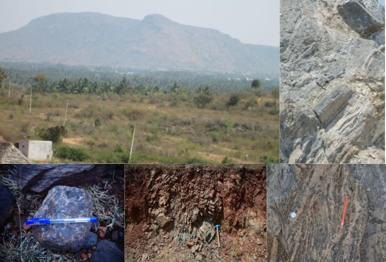
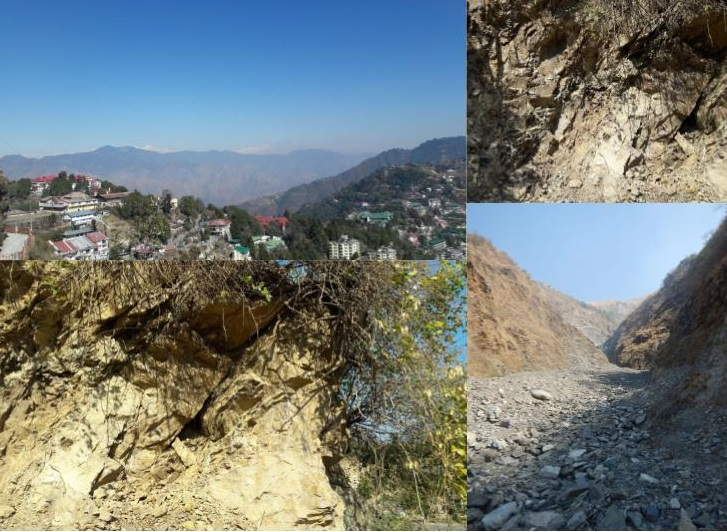
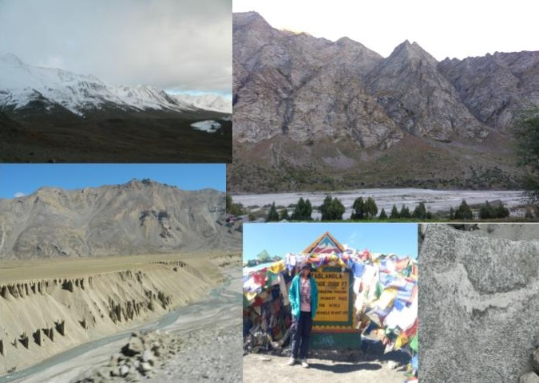
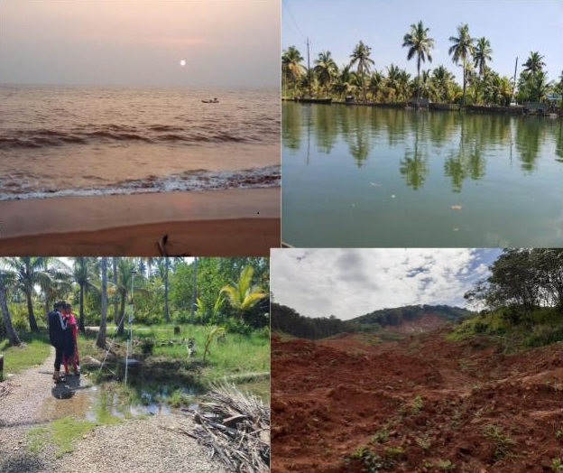

Tamil Nadu
Tamil Nadu is one of the southern most states of India. The region manifests geological rocks and events from different times in the Geological past. One of the most spectacular rock successions are the famous Creatceous rocks of Trichinopoly.

Karnataka
Aenean ornare velit lacus, ac varius enim lorem ullamcorper dolore. Proin aliquam facilisis ante interdum. Sed nulla amet lorem feugiat tempus aliquam.

Dehradun
Dehradoon, is a famous 'doon' or 'valley' city nestled in between the Shiwalik ranges and the Lower Himalaya. The region is a hotbed of tectonic and seismic activity. Field works to places of Dehradun and Haridwar was part of my postgraduate diploma course. The main objectives of the field work were creating ground truth points, studying the indicators of active landslide prone terrains, and identifying the stratigraphic variations dominant in the region.

Ladakh
A visit to the cold desert of India is a dream come true of every traveller. My travel to places in the Greater Himalayan range embarked for studing the climatic responses of the glaciers in the region. The journey set forth a tranverse through spectacular geological formations deformed in complex ways illustrating the journey of the Indian plate towards the Eurasian plate xx billion years ago.

Kerala
Bestowed with natural beauty, the tropical state is also displays a wide variety of versatile geological treasures. Travelling the state has enabled me to visit landslide affected regions of Malappuram, world famous cliffed Quaternary deposits of Varkala, and the tranquil backwaters of the Munroe Island.